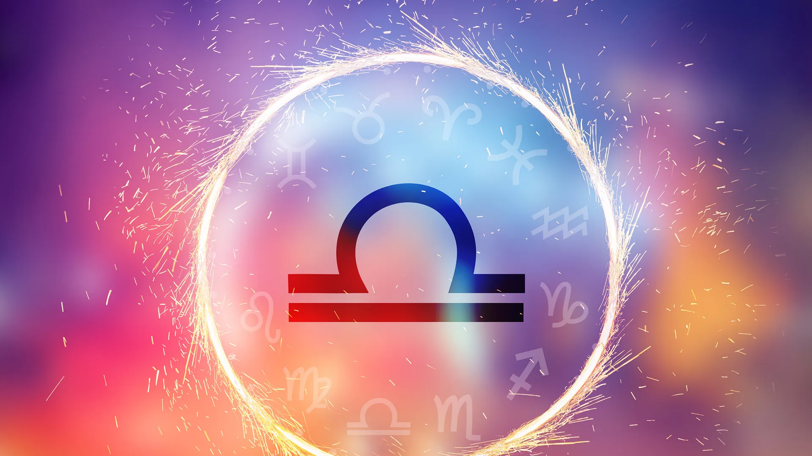

Los geminianos nacen entre el 21 de mayo y el 20 de junio, lo que significa que su espíritu lleno de energía y su amor por la diversidad se despiertan en plena primavera. Los Géminis son conocidos por ser extremadamente versátiles, inteligentes y carismáticos. Son curiosos por naturaleza y siempre están en busca de nuevas experiencias. Son comunicativos y sociables, lo que los convierte en grandes amigos y compañeros.
Las personas del signo Libra son aquellas que nacen entre el 23 de septiembre y el 22 de octubre. Las personas nacidas bajo el signo de Libra suelen ser amables, encantadoras y diplomáticas. Valoran la paz, la equidad y la justicia, y tienden a buscar el equilibrio en todas las áreas de su vida. Son sociables, tienen habilidades para la comunicación y disfrutan estar rodeados de otras personas.
Los Acuario son aquellos nacidos entre el 20 de enero y el 18 de febrero. Si tu cumpleaños cae dentro de este rango, ¡felicidades, eres un Acuario! Este signo es conocido por su mente aguda y su espíritu innovador. Los Acuario son individuos excepcionales que se destacan por su originalidad y su enfoque humanitario en la vida. Son pensadores profundos y creativos, siempre buscando nuevas formas de comunicarse y expresarse.